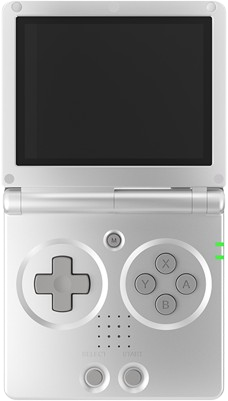

RG35XX SP
The Anbernic RG35XX SP is an Allwinner H700 handheld with a 640x480 screen and no analog sticks. It has its own input profile and RetroArch config, so it never falls back to the RG34XXSP's.

| Argument | rg35xxsp |
/etc/rgos-device | rg35xxsp |
| SoC | Allwinner H700 |
| Screen | 640x480 |
| Menu layout | 720x540 layout, with its startup video (shared with the RG35XX H) |
| Sticks / triggers | no analog sticks, no L2/R2, no L3/R3 |
| Base image | ROCKNIX-H700 (ROCKNIX-H700.aarch64-<release>-DDR4.img.gz) |
| Partition table | MBR; no uboot partition, no SPL to flash |
| ROMS partition | created on first boot as partition 3 |
| Device tree | dtb.img (copied from sun50i-h700-anbernic-rg35xx-sp.dtb) |
| Image | rg35xxsp-rgos.img |
Build
sudo ./build.sh rg35xxsp # SD card image -> out/rg35xxsp-rgos.img
sudo ./build.sh rg35xxsp installer # first-boot installer image -> out/rg35xxsp-rgos-installer.img
sudo ./build.sh rg35xxsp update # offline update tar -> out/rgos-update-rg35xxsp-<id>.tar
H700_RAM=DDR3 sudo -E ./build.sh rg35xxsp # DDR3 console
RG35XXSP_DTB=sun50i-h700-anbernic-rg35xx-sp-rev6-panel sudo -E ./build.sh rg35xxsp # rev6 panel
Other options: ROCKNIX_H700_VERSION=<release tag>
and ROCKNIX_URL=<image .img.gz>. If the device
tree name is not in the stock image the build stops and lists the
ones that are. See Build options.
RAM type and panel revision
Two independent choices decide whether the screen works on this console. Both are made when the image is built, because the U-Boot and the device tree are written to the card then.
-
RAM type:
DDR4(default) orDDR3. The U-Boot on the card is built for exactly one of them. A mismatch is a black screen with nothing written to the card. -
Panel revision: the standard device tree
(
sun50i-h700-anbernic-rg35xx-sp) or the alternate one (sun50i-h700-anbernic-rg35xx-sp-rev6-panel, the rev6 panel). A wrong choice gives a black or garbled screen, but the card still boots far enough to writergos-initramfs.txt.
H700_RAM=DDR3 sudo -E ./build.sh rg35xxsp
RG35XXSP_DTB=sun50i-h700-anbernic-rg35xx-sp-rev6-panel sudo -E ./build.sh rg35xxsp
In the GitHub workflow these are the h700_ram and
h700_panel inputs (standard or
alt); see
Build RGOS in GitHub Actions. If
you do not know which combination your console needs, try the four
combinations. The card's rgos-image-info.txt says
which RAM type an image was built for. The build copies the chosen
tree to dtb.img, which is the only device tree on the
boot partition.
Flash and first boot
-
Flash
rg35xxsp-rgos.imgto the whole card (not to a partition) with balenaEtcher, Raspberry Pi Imager ordd, then eject it cleanly. -
Insert the card and power on. On the first boot
rgos-romscreates the ROMS partition (partition 3, exFAT) in the free space on the card. The old partition table is backed up to the boot partition first. -
Copy ROMs into
roms/<system>/on the ROMS partition and press X in the launcher to rescan.
The full walkthrough is in Getting started; the first-boot installer image is described in First-boot installer.
Controls and input
The SP has no analog sticks, no L2/R2 and no L3/R3. The image
carries /etc/rgos/input-rg35xxsp.json with
"analog": false, so the input hub publishes no axes,
and its own config/retroarch-rg35xxsp.cfg in which the
stick axes and L3/R3 are unbound.
Fast-forward and rewind move off the triggers:
| Combo | Action |
|---|---|
| Menu + Up | fast-forward |
| Menu + Down | rewind |
The other RetroArch combos are unchanged. Games that need the right stick (N64, PSP, PlayStation and others) can use DPAD to joystick; see In-game menu and Controls and hotkeys.
Display and performance
The 640x480 screen uses the same 720x540 menu layout and startup video as the RG35XX H. Heavier systems such as N64 and Saturn will not reach full speed in every game on the H700 consoles. See Supported systems.
Mini-HDMI output
Mini-HDMI is supported on this console. It is selected at boot: power off before connecting or disconnecting the cable, then boot again. The default resolution cap is 720p. See Mini-HDMI output.
Offline updates
An update tar built with ./build.sh rg35xxsp update only
installs on this device (its manifest must match
/etc/rgos-device, which is rg35xxsp). The
device tree is dtb.img; add it to the tar with
UPDATE_DTB=1. Updates never replace the
U-Boot already on the card, so changing the RAM type or the panel
needs a new image. See
Offline updates.
Troubleshooting
-
Black screen, no
rgos-initramfs.txton the boot partition. The console never reached Linux. The usual cause is the wrong RAM type; rebuild withH700_RAM=DDR3 sudo -E ./build.sh rg35xxsp(or the reverse). Also re-flash if the card was not ejected cleanly. -
Black or garbled screen, but
rgos-initramfs.txtexists. The panel revision is wrong; rebuild withRG35XXSP_DTB=sun50i-h700-anbernic-rg35xx-sp-rev6-panel(rev6 panel). Fully power off (10 s power hold) before trying a new card. -
No Bluetooth adapter found. The H700 consoles
use a Realtek RTL8821CS whose Bluetooth half sits on a UART. The
rgos-bt:lines inrgos-logs.txt(orpython3 /opt/rgos/btctl.py diagover SSH) show which step fails.
The full tables are in Troubleshooting and Logs and diagnostic files.
Related pages
- Supported devices: side-by-side comparison
- RG34XXSP and RG35XX H: the other H700 consoles